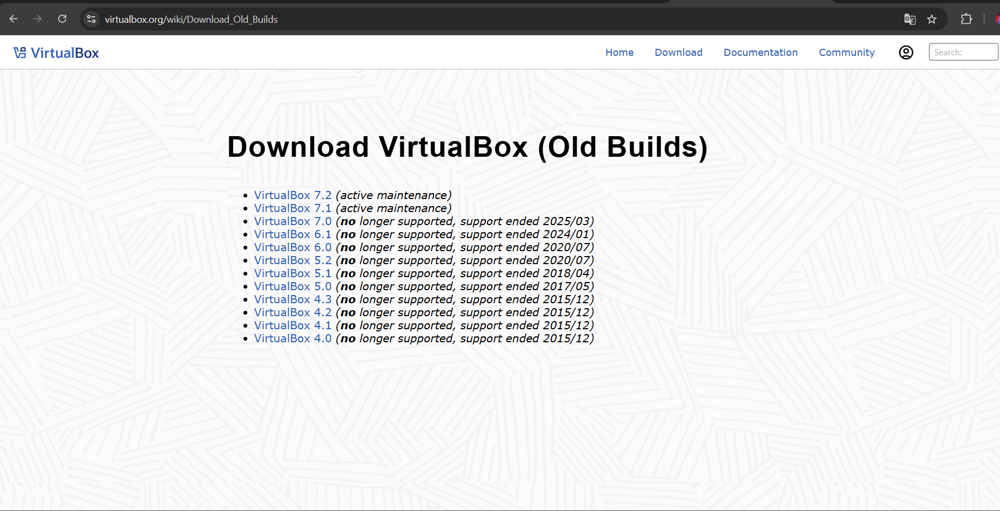
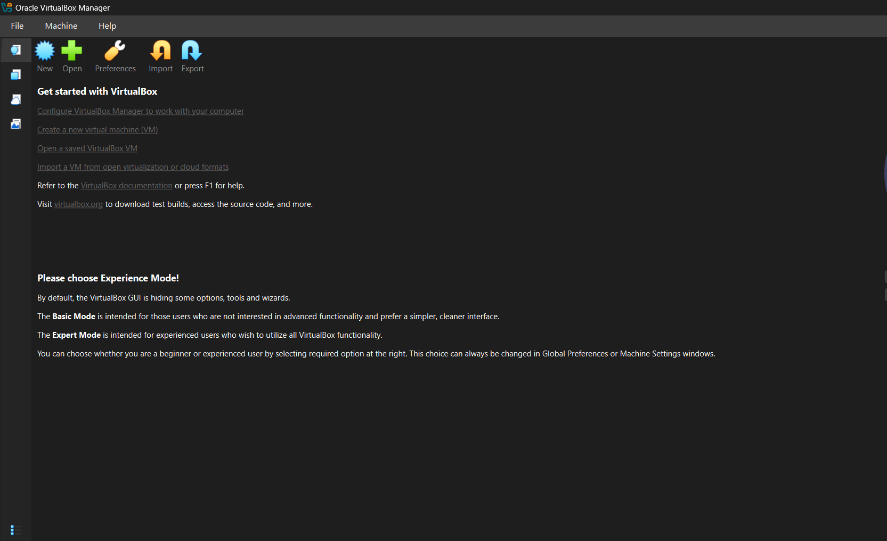
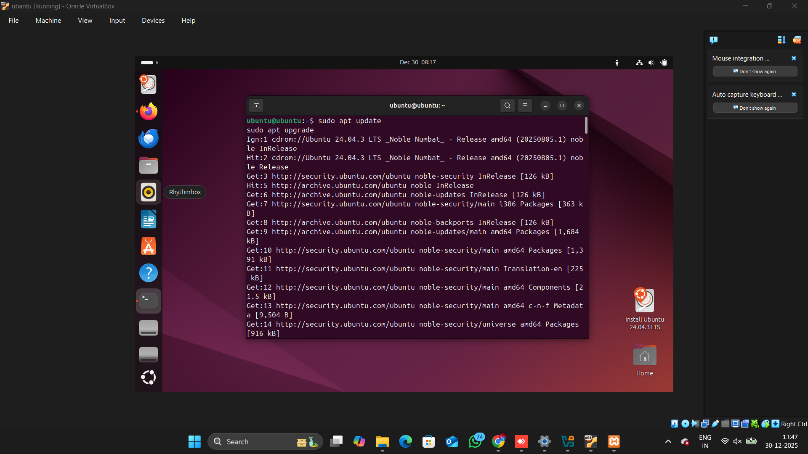
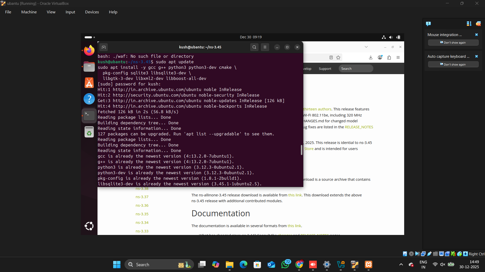
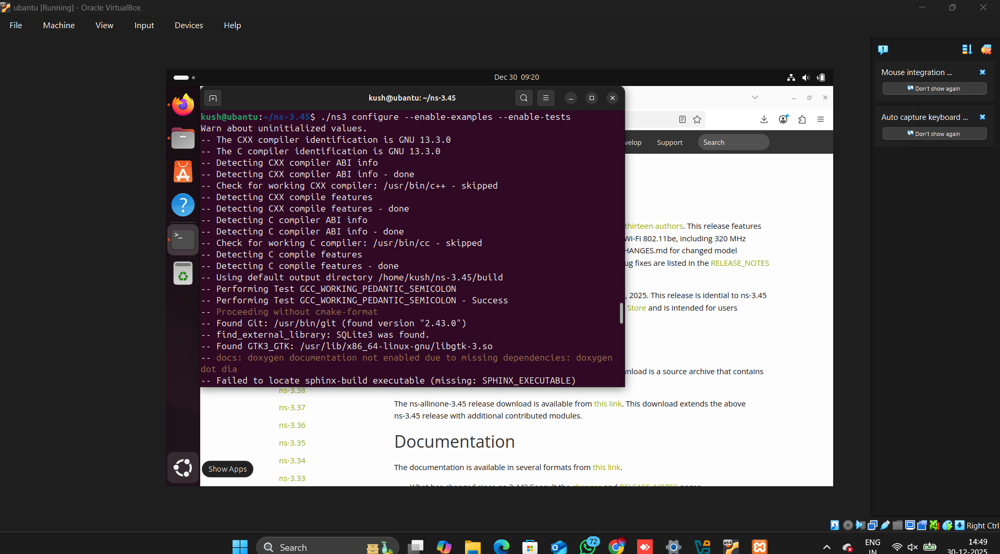

Step 1: Install VirtualBox
VirtualBox allows you to run Ubuntu inside your computer safely.
Download VirtualBox
- Open your web browser
- Visit the official website: https://www.virtualbox.org
- Click Downloads
- Download VirtualBox for Windows
- Download Extension Pack (7.2.2) or etc

Install VirtualBox
- Open the installer
- Click Next on all screens
- Click Install 
Step 2: Install Ubuntu in VirtualBox
Ubuntu is required because NS-3 works best on Linux.
Download Ubuntu ISO
- Visit the official Ubuntu website
- Download Intel or AMD 64-bit architecture ISO https://ubuntu.com/download/desktop
- Open virtualbox and click on new button
- Browse your ISO file and add to virtualbox


- RAM: 4 GB (depend on your Ram)
- CPU: 2 cores (depend on your core)
- Disk: 25 GB (depend on your storage)

Step 3: Install Ns3 in Ubantu
first Download ns3 file and extract file

Now change directory in terminal using cd
Step 3.1: Update Ubuntu
First, update your Ubuntu system to avoid installation errors.
Use command:-
sudo apt update
sudo apt upgrade -y
-

Step 3.2: Install Dependencies
Install all required packages needed to build and run NS-3.
sudo apt install gcc g++ python3 python3-dev cmake git wget \
qtbase5-dev qtchooser qt5-qmake qtbase5-dev-tools \
libsqlite3-dev libxml2-dev libgtk-3-dev -y

Step 3.3: Download & Build NS-3
Download NS-3 from the official website and build it.
Download ns3 file from
cd ns3
cd ns-allinone-3.41/ns-3.41
./ns3 configure --enable-examples --enable-tests
./ns3 build
